Use Git via the Command-Line interface
This page will show you how to perform the main git operations using the git Command-Line Interface (CLI) and it will do so by walking you through the creation of a text-based contact book, where every contact item is a text file.
- For a general description of what each Git command does, see this article insted.
- If you don't have the git CLI installed on your machine yet, you can download it from the git website.
- This article will assume that you operate on Microsoft Windows, but the git commands are exactly the same on all other platforms.
git init operation
For a general description of this git operation see the main article.
To initialize a new git repository with the git CLI, from the command-line
shell, first create a new project directory; we will call our project contacts.
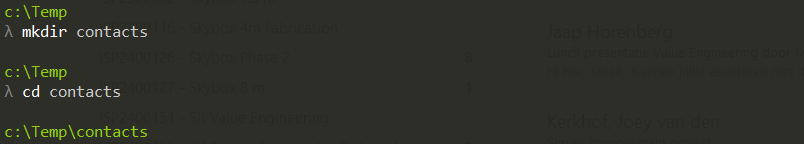
From within the contacts folder, run the git init command.
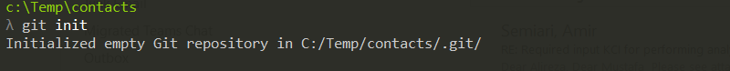
This command creates a .git sub-directory in the contacts directory.
git commit operation
For a general description of this git operation see the main article.
In order to have some changes to commit, let's add the first two items to our
contacts book by creating two files John.txt and Marie.txt.
Let's write the following contents to John.txt and save it:
name: John Nash
phone: +1 617 253 1000
Let's write the following contents to Marie.txt and save it:
name: Marie Kurie
phone: +33 1 56 24 55 00
You can visualize the current changes by using the git status command.
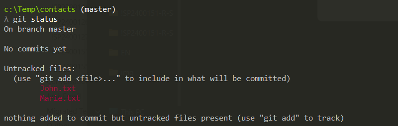
Git has correctly detected that, compared to the initial status (empty directory) there are now two new files.
Say that this is a version of our project that we want to commit: we will
first of all need to tell git which changes we want to commit and which
we don't. For example, you may want to commit only Marie.txt or only
John.txt. You can do that by adding the changes you want to commit to
a virtual bucket named staging area, using the git add command. In
this case we will add all the changes to the staging area.
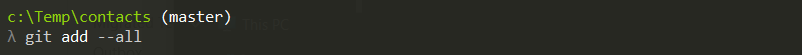
If we run the git status command again, we'll see that the status has
changed: the two files are not in the Untracked status anymore, but
they are now under Changes to be commited.
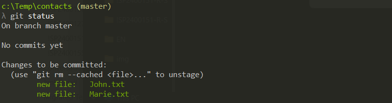
Now we can finally commit the changes and we'll do so using the
git commit command, followed by a message that describes the commit.
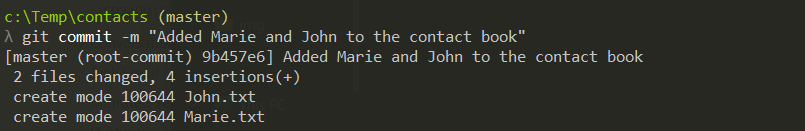
If you run the git status command again, git will tell you that
there no changes have been made since the last commit.
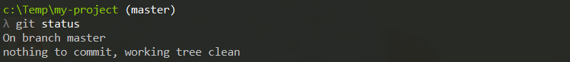
You can repeat this as many times as you want. To illustrate this, let's apply some changes and commit them.
First of all we misspelled the family name of Marie, therefore we need to change 'Kurie' to 'Curie'. Let's do that and save the file.
name: Marie Curie
phone: +33 1 56 24 55 00
Then let's add the new item Alan.txt to our contacts book and set
its contents as follows:
name: Alan Turing
phone: +44 20 3862 3352
After modifying Marie.txt and adding Alan.txt to our project,
the status will be as follows:
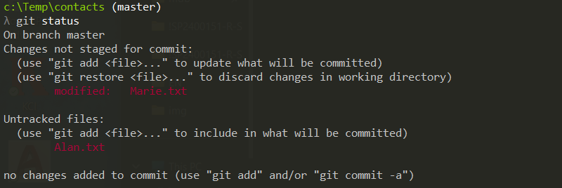
Again git has detected the changes correctly: 1 file added and 1 file changed! Let's just stage and commit these changes.
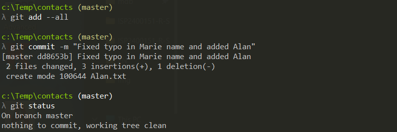
If you want to list all the commits stored so far, you can do so by
entering the git log command.
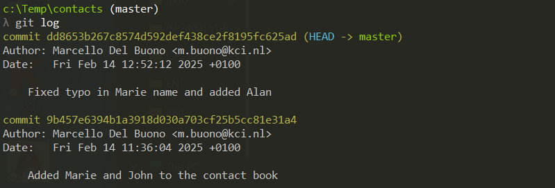
As you can see, git has automatically assigned a unique name to each of the two commits:
- The first commit is called
9b457e6394b1a3918d030a703cf25b5cc81e31a4 - The second commit is called
dd8653b267c8574d592def438ce2f8195fc625ad
git checkout operation
For a description of this operation see the main tutorial.
So far we have initialized a git project and committed two sets of
changes. Our project folder is now identical to the second commit. If
you want to go back to the first commit, you can use the git checkout
command. In the following example, the first commit (the one named
9b457e6394b1a3918d030a703cf25b5cc81e31a4) is checked out; notice that
you need to enter only the first few characters of the commit name: just
enough to uniquely identify the commit.
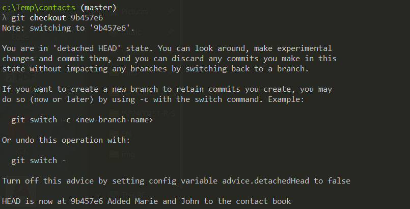
You can now verify that, after this command, the content of the folder has been modified to match the content at the moment of the first commit, which is:
- Only two files present:
Marie.txtandJohn.txt - The file
Marie.txtcontains the misspelled name 'Kourie'
Although possible, this way of switching between commits is not commonly used; branching is a much better way of doing that. Let's therefore restore the original sistuation by checkking out the master branch.
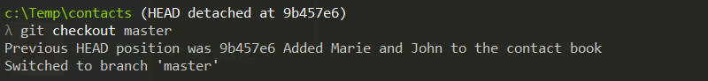
Again, you can now verify that the lates working directory contents have been restored. In particular:
- The folder contains three files:
Marie.txt,John.txtandAlan.txt - The file
Marie.txtcontains the correctly spelled name 'Courie'
git branch operations
For a description of this operation see the main tutorial.
Say that you've decided to convert your items from plain text format to
JSON, but you want to keep your
current format available. You will need to branch your project, using the
git branch command. We will call the new branch "json".
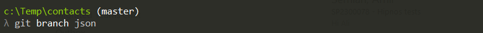
Now the new json branch has been created; you can see the list of
extisting branches by typing the git branch command without parameters.
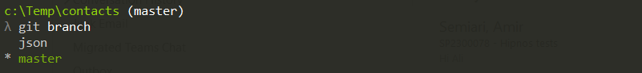
The previous command shows that there are two branches and that the
active branch (the one with a * next to it) is master. The branch
command, indeed, created a new branch but it didn't automatically
activate it. To switch to the json branch, we use the git checkout
command:
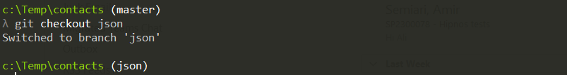
Notice that the screenshotd of this tutorial are not made using the default windows shell (cmd), but are done so using a git-aware shell. That's why you see, for example, the name of the current branch next to the prompt.
Now the active branch is json, but since we have just created it,
its contents are identical to the master branch. Let's then start
committing changes, knowing that the original master branch
content is just a git checkout master away.
Let's rename Marie.txt to Marie.json and modify its contents
as follows ...
{
"name" : "Marie Curie",
"phone" : "+33 1 56 24 55 00"
}
... and let's then save and commit the change.
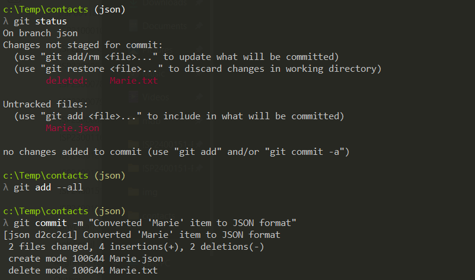
Let's now rename John.txt to John.json and modify its contents
as follows ...
{
"name" : "John Nash",
"phone" : "+1 617 253 1000"
}
... and let's then save and commit the change.
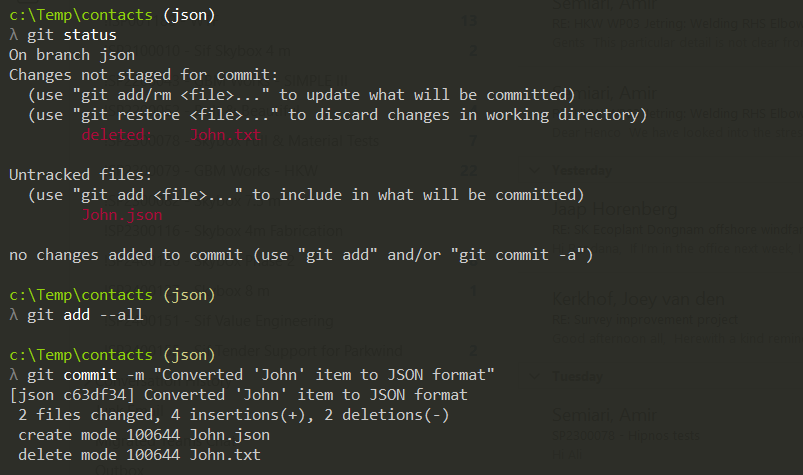
Let's finally rename Alan.txt to Alan.json and modify its contents
as follows ...
{
"name" : "Alan Turing",
"phone" : "+44 20 3862 3352"
}
... and let's then save and commit the change.
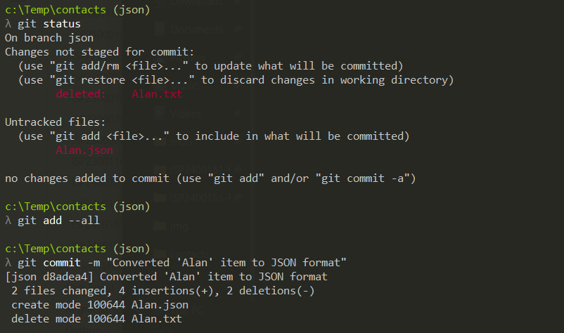
We have now performed 5 commits in total: the first two in master and
the other three in json, as shown by the git log command.
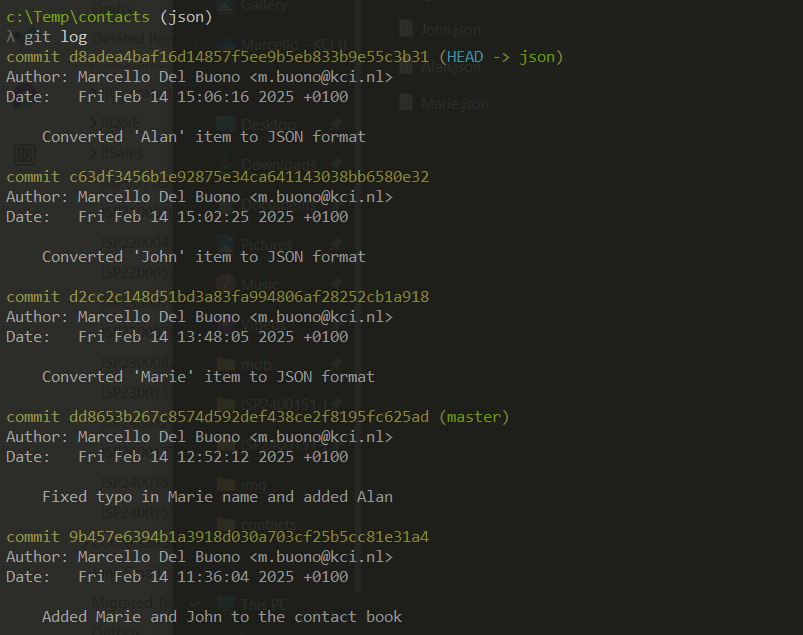
We could now restore the master branch using the command git checkout master.
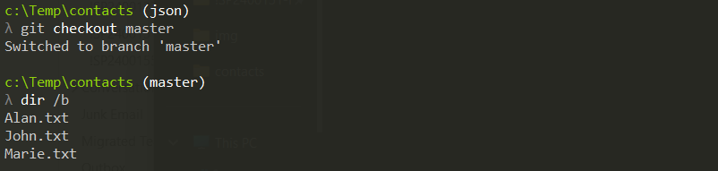
Of course we can also go back to the json branch using the git checkout json,
but first let's modify the master branch: let's create the following Enrico.txt
file and save it.
name: Enrico Fermi
phone: +39 06 4550 2901
Let's then commit the changes, noticing that they will be always committed
to the current branch (which is master, in this case).
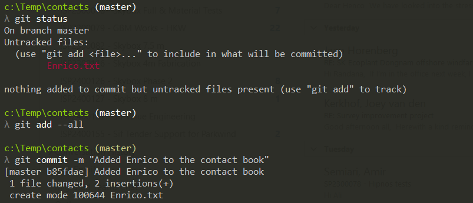
Let's now log the commits (with some extra options to show the branch tree structure).
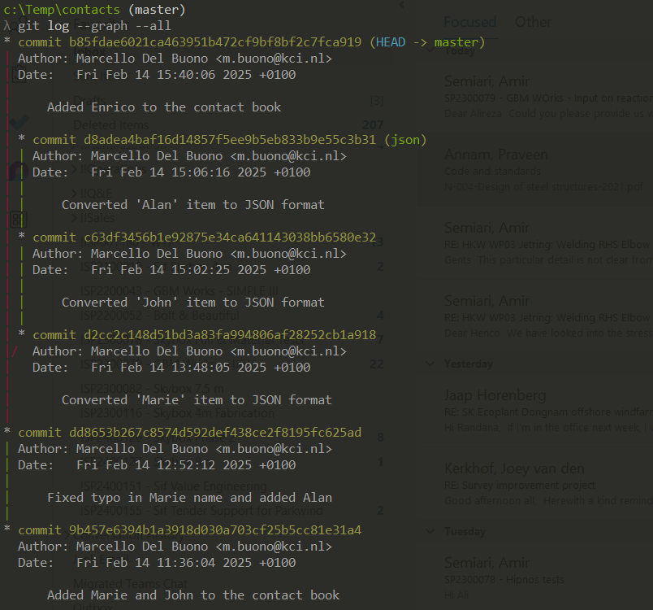
As you can see, the latest commit (add Enrico) belongs to the master branch.
You can verify that by switching back to the json branch and checking that
Enrico.txt is not present in that branch.
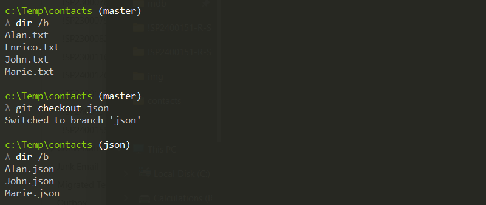
git merge operation
For a description of this operation see the main tutorial.
In the previous chapters we have created a git-versioned project and committed some changes in different branches. Now we have two divergent branches and in this chapter we will merge them together in the master branch again.
To merge the json branch into the master branch, we need to switch to the
branch named master and then enter the git command git merge json.
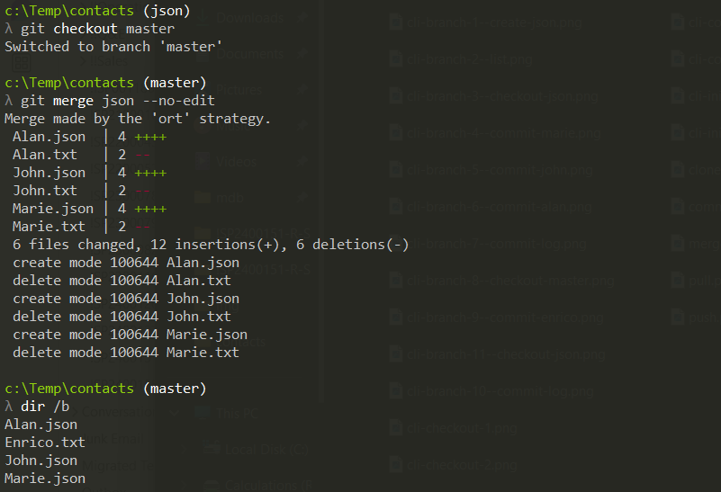
You can verify that all the changes performed in the json branch and all the
changes performed in the master branch are now all in the working directory.
By logging the commits tree, you can also see that the merge command has
automatically created a new commit.
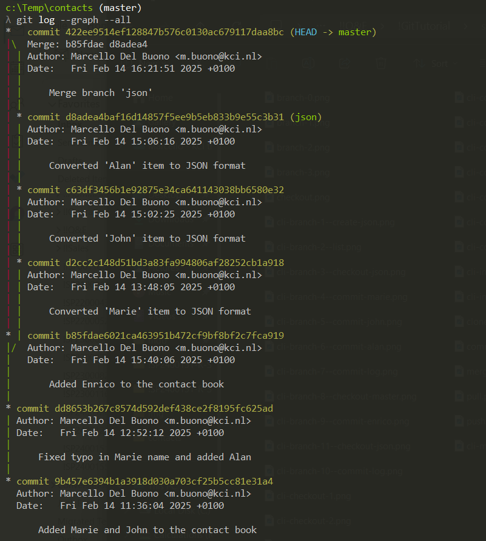
Once you are done with the
jsonbranch, you may delete it using the commandgit branch -d json